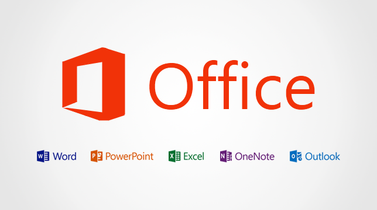
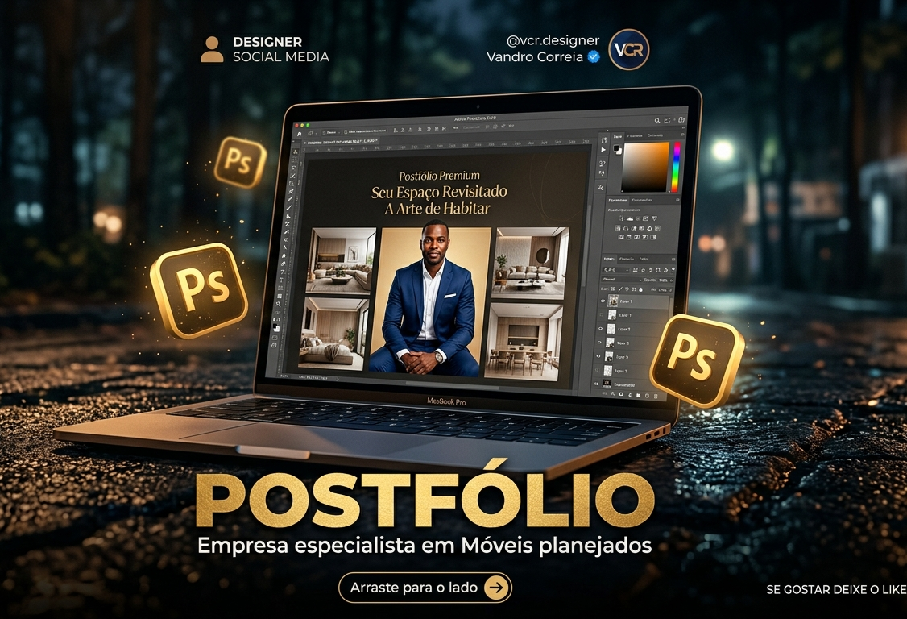

Instalação de Windows
Instalação limpa, drivers essenciais e otimização para melhor desempenho.
Pedir VCR TECH
VCR TECH
Suporte Informático • Beira
Windows lento, erros no sistema ou precisa instalar programas? Eu resolvo com rapidez e segurança.
Quem Somos
Sou o Vandro Correia, especialista em suporte informático e desenvolvimento web na Beira. Ajudo-te a manter o computador rápido, seguro e ainda coloco o teu negócio ou portfólio a funcionar online.
Pedir assistênciaGarantir que cada cliente tenha um computador rápido, estável e pronto para trabalhar, com um serviço de suporte claro, honesto e sem complicações.
Ser uma referência em suporte informático e criação de presença digital na Beira, ajudando pessoas e pequenos negócios a usarem a tecnologia de forma simples e profissional.
Nossos Serviços
Instalação limpa, drivers essenciais e otimização para melhor desempenho.
Pedir


Desenvolvimento de sites para empresas, lojas, igrejas, organizações e profissionais, com design moderno, rápido, responsivo e preparado para aparecer bem no telemóvel.
Portfólios online para estudantes, programadores, designers, fotógrafos e freelancers mostrarem projetos, competências e currículo de forma profissional.
Se precisas de algo específico em suporte informático, desenvolvimento web ou presença digital, fala comigo e montamos a solução certa para ti.